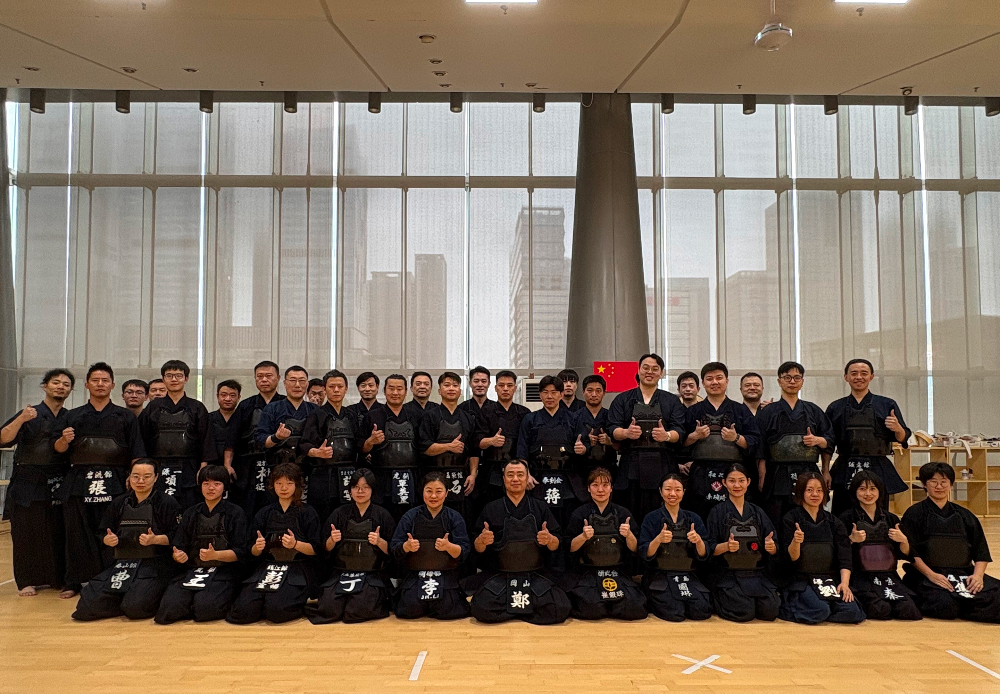

중국 난징 합동계고회
2025.8.1 - 8.3.
자기 자신을 알려면 자신의 마음을 들여다 보아야 합니다. 마음은 흔들림 속에서 잘 드러나고, 검도는 몸과 마음의 흔들림을 마주하게 합니다. 검도를 수련하는 것은 자신의 마음을 비추어보는 탁월한 방법입니다.
검도의 뜻은
검(劍)을 통해 길(道)을 찾는 것입니다.
목적지와 방향을 모르고 무작정 길을 나서기는 어렵습니다. 정확한 목적지와 방향을 알면 먼 길을 가더라도 인내하는 힘이 생깁니다. 연심관도장이 그 길을 함께 걷겠습니다.
대한검도회 공인 5단
생활스포츠지도사 2급
위촉사범 최은주는 오랜 시간 실업 선수로 활동하며 검도 기술과 정신을 단련했습니다. 선수 시절 쌓은 풍부한 경험을 바탕으로, 단순한 기술 전달을 넘어 진정한 검도의 깊이를 전수해 드릴 수 있습니다.
또한, 10년 이상 부산, 고흥, 장성 등 다양한 지역에서 학생부터 일반인까지 수많은 분들과 함께하며 지도 경험을 쌓았습니다. 각 수련생의 눈높이에 맞춰 맞춤형 지도를 제공하는 것이 가장 큰 강점입니다.
전일본검도연맹 연사 7단
관장 정재진은 일본 오카야마에서 수학하였습니다. 오카야마 연심관도장의 관장이었던 고 사카네 마사요시 선생의 문하에서 검도의 본질과 예법, 그리고 마음가짐을 배웠습니다.
검도를 함께 수련하는 동료로서 관원들과 소통하며 검도의 즐거움을 나눌 것입니다. 현재도 일본 현지 사범들과 꾸준히 교류하며 수련을 계속하고 있어, 언제나 최고 수준의 검도를 함께 경험할 수 있습니다.
월, 수, 금 | 17:00 ~ 18:30
화, 목 | 19:30 ~ 21:00
경남 양산시 평산회야로 137 선우4차아파트 상가 지층
2025.8.1 - 8.3.
연심관도장이 세계 검우들이 연결되는 접점이 되겠습니다.
연심관도장은 일본 오카야마 연심관을 비롯해 광룡관, 석심관, 중국 난징 등 세계 각지의 유수 도장과 깊은 인연을 이어오고 있습니다. 이러한 교류는 세대와 국경을 초월한 검도의 정신과 우정을 나누는 장이 되어왔습니다.